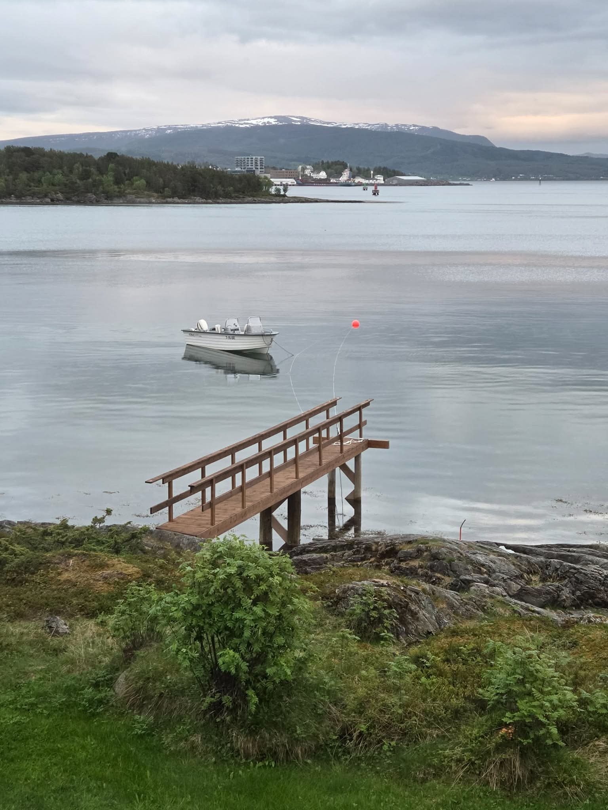

What the Sea Eagles Are Doing Up There
The largest bird of prey in northern Europe lives along this coast in numbers found almost nowhere else. A closer look at the bird you will see from the boat — and what it is actually doing.
Read more